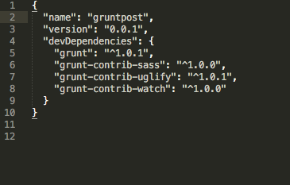
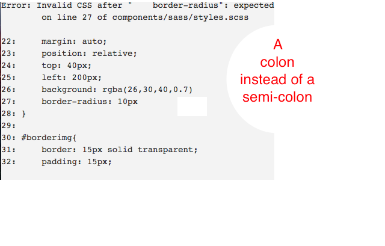

If you have a big project and a lot of code to write, then it makes sense to automate tasks and save time. Grunt is a called a task runner which means it automates tasks. By simply pressing save, you can have it minify your JavaScript, compile your Sass code into CSS and check your code for any errors all in a few seconds. It also helps teams on a single project by having them all work with unified standards. It is a command line tool and I will be using the terminal on a mac laptop so PC users can only observe here. Grunt allows you to install plugins via the terminal and there are over 5000 plugins to install. You can go to the grunt website here and check them out.
In this tutorial, I will only be working with a Sass plugin and a couple more that involve basic JavaScript and HTML. I'm assuming you already know that Sass is a pre-processing language that extends your CSS. If you're not familiar with it, it's easy to learn and you can find out more about using Sass from their website here. Another thing I will assume is that you are using a mac. I have nothing against pc users, but I'm a believer that once you go mac, you can never go back. I'll be using sublime as the text editor but any editor should be fine.
The first first thing you need to do is create a folder with your basic HTML index file. Next, you need to be bring that directory up in the command line terminal. Navigate to your new folder by typing in
cd /desktop/the name of folder
Note: you could also type cd / and just drag your folder into the terminal and press enter if you want to save about 5.2 seconds
In that folder, we will need to create a file named package.json. This file will be a documentation for what dependencies
your project will use and will load the plugins required by Grunt. This can be created in the command line or in your text editor. I prefer doing it via the command line by typing in the command
npm init
You will then be walked through setting up the file with questions. The name and version fields are required, the rest is optional and you can skip them but make sure the entry point is index.html. It should look like the image below.

Grunt runs on Node.js so you will need to install it. You can check if you have node by typing in the command line
node -v
You can get the latest version of Node.js
gem install sass
If you get a permission error, many tutorials will tell you to type in sudo first and it will work. Sudo stands for super user and it gives you the power to make changes on your laptop like you are the main/root user. If the you're using a personal computer, you can give yourself this power all the time by typing in this command and then your password.
sudo chown -R $USER /usr/local
To check that you are the owner of the subfolders of user local, type in
ls -l /usr/local
Now you can install things like a mack daddy.
In order to use grunt, you need to use the grunt command line interface tool, aka CLI. You can install it by typing in the command line
npm install -g grunt-cli
We now need to install packages/plugins into the project. Just to be clear, we need to install what we need for every project because we are installing locally and you will have a version of grunt for every install.
We will now install the following: grunt, sass , uglify( a JavaScript compressor) and a watch package (watches changes you make to your files).
First, install grunt itself:
npm install grunt --save-dev
Next, install Sass:
npm install grunt-contrib-sass --save-dev
Next, install Uglify:
npm install grunt-contrib-uglify --save-dev
Lastly, install Watch::
npm install grunt-contrib-watch --save-dev
You'll notice that if you go back into your package.json file, you will see the name devDependencies has been added with the packages and their version number.
We now need to enable our packages/plugins in the project with a file called Gruntfile.js. This is where we set the configuration of the project and tell grunt what tasks it will be doing. This file needs a special object format and its easy to make a mistake so instead of typing this out, lets copy and paste my example gruntfile.js. You can
always change files or folder names if your setup is different then mine or in the future if you want to use different plugins.
module.exports = function(grunt) {
grunt.initConfig({
pkg: grunt.file.readJSON('package.json'),
uglify: {
my_target: {
files: {
'js/script.js': ['components/js/*.js']
}
}
} ,
sass: {
dev: {
options: {
style: 'expanded',
sourcemap: 'none',
},
files: {
'css/main.css': 'components/sass/styles.scss'
}
}
},
watch: {
options: {livereload: true},
css: {
files: '**/*.scss',
tasks: ['sass']
},
scripts: {
files: ['**/*.js'],
tasks: ['uglify']
},
html: {
files: ['*html']
}
},
});
grunt.loadNpmTasks('grunt-contrib-uglify');
grunt.loadNpmTasks('grunt-contrib-sass');
grunt.loadNpmTasks('grunt-contrib-watch');
grunt.registerTask('default',['watch']);
}
A quick overview of what the file consists of is a wrapper function that all of the code goes in, a configuration section that directs grunt to what folders and files it needs to go to and a task loading section that loads whatever plugins you have installed. I have my sass folder in a components folder. I also have a javascript folder in a components folder. The purpose of these folders is to separate my pre-compiled css and javascript into one place and then have grunt go in and do the work of minifying and converting sass into css. You can name the folders whatever you like but they need to match the gruntfile.js document.
The LiveReload application does not need to be installed but you do need to configure it in your gruntfile. It works by handling all requests to port 35729 on whatever computer it is running on. It will look for a script tag in your project and a hostname and port to connect to so you will need to include the following script code in your index file before the closing body tag:
"http://localhost:35729/livereload.js"
This will allow the reload application to be injected into your web page so every time you save your index or .scss file, the browser will automatically refresh. If this is all done correctly, you should be ready to use the tasks by simply typing grunt in the terminal and you should see running "watch" task in the terminal. Now any changes you make in your project will be detected and the browser should refresh on every save command. If you ever have a syntax error, be ready to see an image like the one below that will show you the exact line of code that the error is right in your index file.

And the last thing I'd like to mention is the node_modules folder that should have been created earlier. If you want to push your files to github, there is absolutely no need to include the modules in the git repository. The way we prevent them from being pushed is to create a file called .gitignore. When you create this file, you'll get a warning about the peroid being in the front; ignore it. In the file, type in and save
node_modules
Now all the modules will be ignored when making a commit. I'm sure there is more that I could have covered but I think that with what we have here, you're ready to roll and make that awesome project you're working on faster.